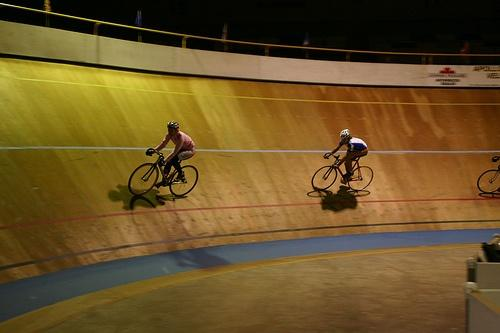
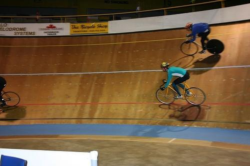
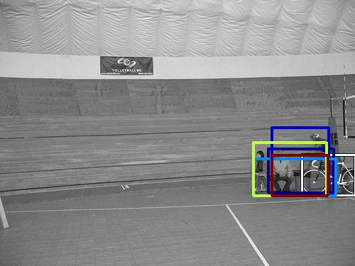
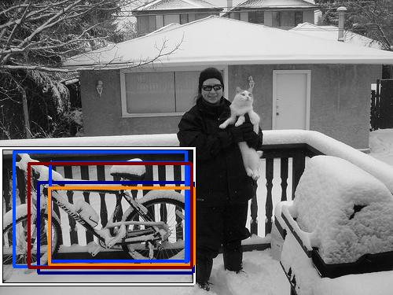

0.509415

0.588288

0.640347

0.644440

0.651634
0.685188

0.686126
0.688248

0.755855

0.780417
| Target image | 0.509415 | 0.588288 | 0.640347 | 0.644440 | 0.651634 |  0.685188 | 0.686126 |  0.688248 | 0.755855 | 0.780417 |
Target image |  8056.876953 |  7511.499512 |  7016.539551 |  6845.880371 |  6691.397949 |  6630.759277 |  5426.859375 |  5013.354492 |  4937.442383 |  4690.315918 |
Target image |  7291.318359 |  6263.974121 |  5394.611328 |  4295.549316 |  4225.916992 |  3872.591553 |  3632.855225 |  3436.788086 |  3301.335449 |  3262.991455 |
| Target image  |  5138.420898 |  4666.704590 |  4638.941895 |  4415.849121 |  4227.491211 |  4155.695801 |  3972.625000 |  3882.590332 |  3855.524414 |  3320.898438 |
Target image |  3007.401855 |  2794.714355 |  2633.453125 |  2471.874756 |  2428.530273 |  2045.039917 |  1837.924072 |  1826.029541 |  1819.626465 |  1765.673218 |